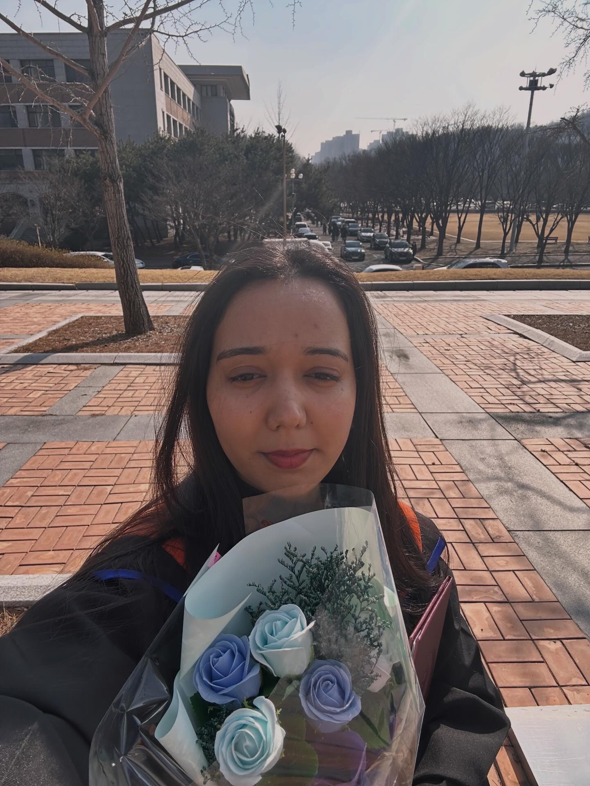

SunMoon University
03/2024 – 02/2026M.S. Computer Science and Engineering · Asan, South Korea
FinTech · Blockchain · Web Services · Information & Data Management · Reinforcement Learning · Advanced Decision-Making Systems
ML / AI Research & Software Engineering
Anomaly detection · Applied ML systems . Development
I completed my Master's in Computer Science and Engineering at SunMoon University, South Korea, advised by Prof. Taek Lee. My research on wearable-sensor anomaly detection was published in KICS 2026. I'm currently open to opportunities in ML/AI research and software engineering. If you're working on something interesting or hiring, feel free to reach out.

M.S. Computer Science and Engineering · Asan, South Korea
FinTech · Blockchain · Web Services · Information & Data Management · Reinforcement Learning · Advanced Decision-Making Systems
B.S. Computer Science · Lahore, Pakistan
AI · Machine Learning · Computer Vision · Databases · Data Structures & Algorithms · Web Technologies · Mobile App Development
Scopus-indexed publication, KICS 2026
Korean copyright registration — anomaly detection software tool
SunMoon University Research Lab · Asan, South Korea
NetSol Technologies · Lahore, Pakistan
KICS 2026 · Scopus-indexed
A Streamlit app that evaluates and compares anomaly-detection models on uploaded wearable sensor data, using ensemble voting across multiple ML/DL approaches.
Built a GPT-style transformer from scratch in PyTorch as a learning exercise: self-attention, causal masking, and all.
A web-based environment for interior and exterior building design, letting users create and plan building layouts in 2D and 3D.
Frontend for a wristwatch shop selling multiple brands, with a Python backend.
Samsung English Academy/ 더상승영어학원 / Premium L Academy — South Korea
Part-time English teaching roles: elementary through high-school students, Tangjeong & Baebang.